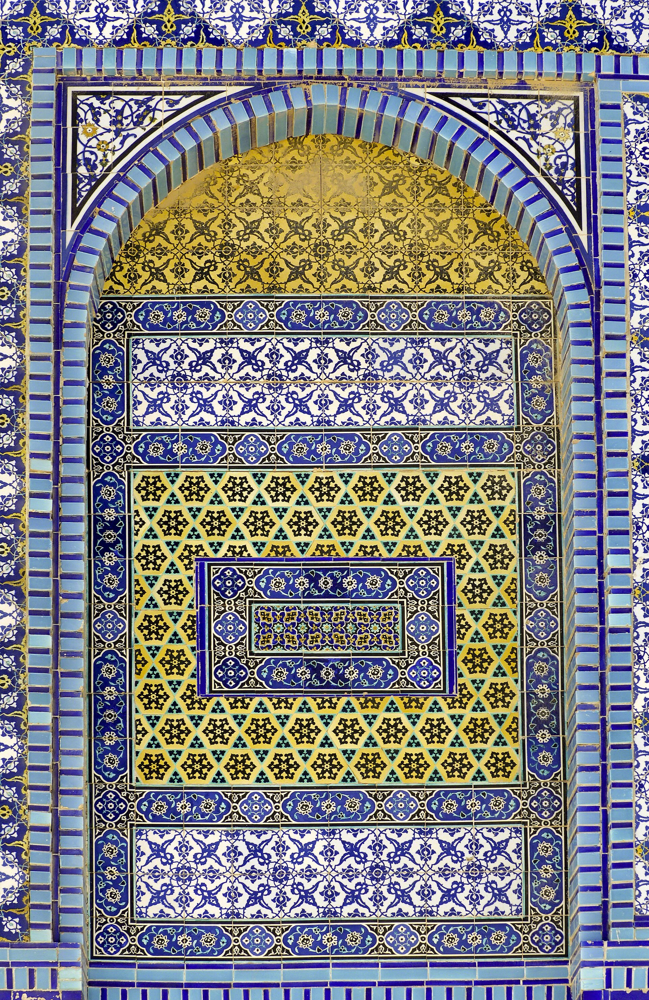

CAIR Oq uy va Kongressdan Isroil hibsidagi amerikalik fuqaro Abdalkarim Safini ozod qilishni soʻradi
Council on American-Islamic Relations 19 yoshli amerikalik fuqaro Abdalkarim Issa Ahmad Safi iyun oyidan beri Isroilda ayblovsiz, maʼmuriy hibsda saqlanayotganini aytib, Davlat departamentidan uni ozod qilishni talab qildi.

AQShning eng yirik musulmon huquqlari tashkiloti — Council on American-Islamic Relations (CAIR) — Oq uy va Kongressdan Isroilda hibsda saqlanayotgan amerikalik fuqaro Abdalkarim Issa Ahmad Safini ozod qilishni talab qilishga chaqirdi. Tashkilotning Texas boʻlimi bilan birga qilingan bayonot 2026-yil 2–3-oktabr kunlari eʼlon qilindi.
Nima maʼlum
CAIR maʼlumotiga koʻra, Texas shtatiga bogʻliq 19 yoshli Safi 2026-yil iyun oyida Isroil harbiylari tomonidan Gʻarbiy Sohildagi Jalazon (Ramalloh shimoli) qishlogʻidagi oilaviy uyidan olib ketilgan. U ayblov eʼlon qilinmagan holda, advokat va oilaga koʻrsatilmagan maxfiy dalillarga asoslangan maʼmuriy hibs (administrative detention) tartibida, taxminan toʻrt oydan beri Ofer qamoqxonasida saqlanmoqda.
CAIR talabi
CAIR Kongressdan nazorat vakolatlaridan foydalanishni va Davlat departamentini Safini tez va xavfsiz ozod qilishga koʻmaklashishga undashni soʻradi. Tashkilot Safining sogʻligʻi yomonlashgani haqidagi xabarlarga eʼtibor qaratdi.
CAIR milliy ijrochi direktori Nihad Avod (Nihad Awad): «Isroil hukumatining amerikaliklarni oʻgʻirlashda davom etishi va ularni hech qanday jinoiy ayblov yoki boshqa qonuniy jarayonsiz qiynoqlari bilan tanilgan qamoqxonalarga yoʻqotib yuborishi Oq uy va Kongress uchun qabul qilib boʻlmas holat boʻlishi kerak», — dedi.
AQSh hukumati va Isroil pozitsiyasi
AQSh Davlat departamenti vakili vaziyatni «kuzatib borayotganini», tibbiy yordam, munosib muomala va konsullik tashriflarini taʼminlashga harakat qilayotganini aytdi, biroq maxfiylikni sabab qilib qoʻshimcha izoh berishdan tiyildi. Isroil tomoni ushbu ish boʻyicha bayonot bermadi; Isroil maʼmuriy hibsni xavfsizlik chorasi sifatida qonuniy deb hisoblaydi, tanqidchilar esa uni sudsiz, ayblovsiz saqlash deb ataydi.